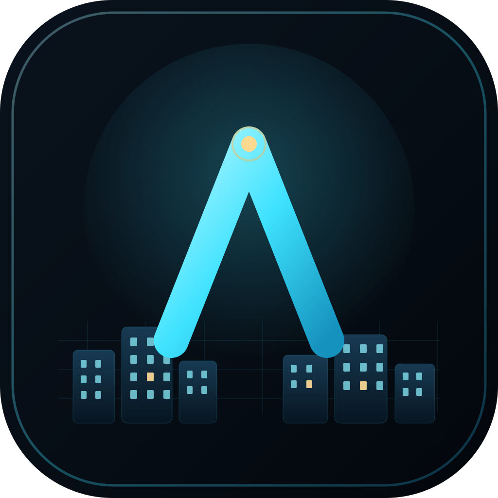
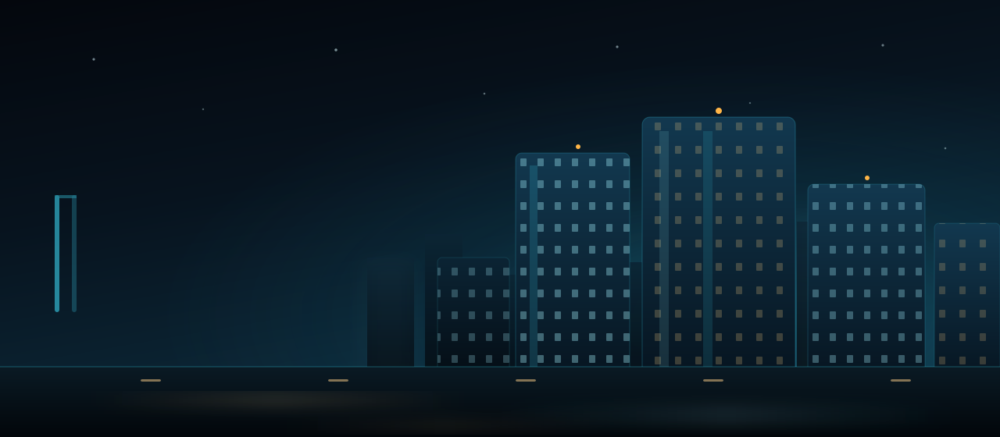

ÉTAT DU SERVEUR
Azur City · Centre-ville
Vérification
1.12.2
—Joueurs
—Latence
Connexion au serveur Azur City…
play.azur-rp.eu

AZURRP MODERN RPInitialisation de la ville…
Ta ville. Ta vie. Ton histoire.
Un serveur roleplay contemporain où chaque emploi, chaque contrat et chaque rencontre construisent ta vie. Rejoins Azur City, choisis ton quartier et fais ta place au cœur de la ville.
À Azur City, personne ne te demande d’où tu viens. On te demande seulement ce que tu comptes construire.
— Le Journal d’Azur City, édition du matinConnecte-toi avec ton compte AzurRP pour retrouver ta vie en ville.
AzurRP n’est pas affilié à Mojang Studios ni à Microsoft. Connexion hors-ligne sécurisée par compte serveur.

Une métropole contemporaine, des quartiers vivants, une économie qui tourne. Ici, chacun construit sa vie : un métier, un logement, des rencontres et sa réputation.
Connexion au serveur Azur City…
Première connexion ? Choisis ton métier auprès de la mairie, trouve un logement et présente-toi aux habitants de ton quartier.
Événements, mises à jour et nouvelles de la ville.
Une métropole, des quartiers, mille vies à écrire ensemble.
Récupération des informations du serveur…
Métiers, entreprises, immobilier, politique et économie : la ville évolue au rythme de ses habitants et de leurs projets.
Un règlement clair, une équipe présente et des événements réguliers pour que chacun puisse trouver sa place.
Marchés nocturnes, festivals urbains, interventions du LSPD et du EMS : Azur City ne s’arrête jamais vraiment.
Adapte AzurRP à ta machine. Les modifications sont enregistrées localement.
Vérification des fichiers Minecraft.